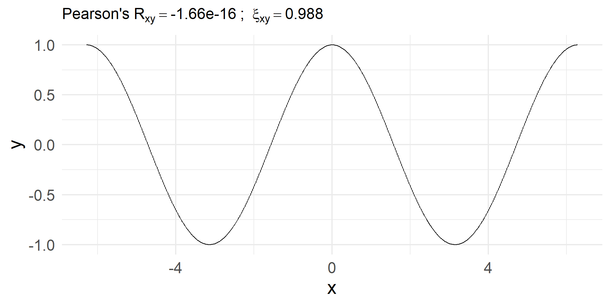
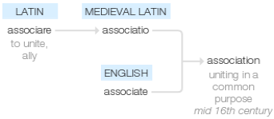
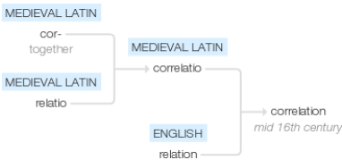
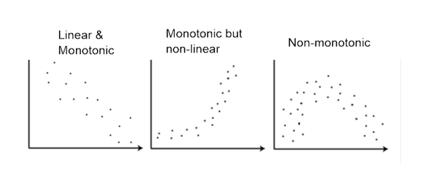
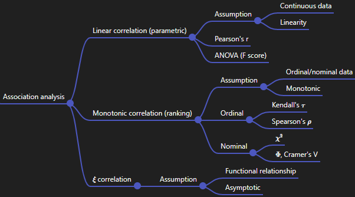

Association Analysis
Large N & Leeuwenhoek (70700173)
Yue Hu
Tsinghua University
Overview
- Linear correlation
- Monotonic correlation
- Non-monotonic correlation
Linear Correlation
Etymoloy


Covariance
How one changes then the other.
\[\sigma_{X, Y} = \sum(X - \mu_X)\color{red}{(Y - \mu_Y)}p(X, \color{red}{Y}).\]
Remember Variance?
\[\begin{align} \sigma^2_X =& \sum(X - \mu_X)^2p(X),\\ =& \sum(X - \mu_X)\color{red}{(X - \mu_X)}p(X, \color{red}{X}). \end{align}\]
In other words, covariance is literally co-variance.
Correlation
If see one high, when the other is high.
Note
Covariate: Dynamic vs. Correlation: Static
Common Types:
- Karl Pearson’s r (Linear);
- Maurice Kendall’s τ (Monotonic);
- Charles Spearman’s ρ (Monotonic).
Pearson’s r: Linear Correlation
Assumption
- Continuous data
- Linear Relationship (one-on-one)
For a population
\[\rho_{X,Y} = \frac{\sum(X - \mu_X)(Y - \mu_Y)p(x,y)}{\sqrt{\sum(X - \mu_X)^2p(X)}\sqrt{\sum(Y - \mu_Y)^2p(Y)}} = \frac{\sigma_{X, Y}}{\sigma_X\sigma_Y}.\]
For a sample
\[r_{XY}=\frac{\sum_{i=1}^n (x_i-\bar{x})(y_i-\bar{y})}{\sqrt{\sum_{i=1}^n(x_i-\bar{x})^2}\sqrt{\sum_{i=1}^n(y_i-\bar{y})^2}}.\]
Properties
- ρ∈ [-1, 1], 0 independent.
- Greater value indicates stronger linear relationship.
- Parametric test1
- Not robust to skewed data and outliers.
Limination

Monotonic Correlation
Solution: Ranking
\[Diff_{quantity} \rightarrow Diff_{relation}.\]
For any pair of observations xi, yi and xj, yj, i < j,
Concordant pairs: xi >xj & yi >yj | xi <xj & yi <yj;
Discordant pairs: xi >xj & yi <yj | xi <xj & yi >yj;
Tied pairs: xi = xj & yi = yj;
Tau: Monotonic Correlation
Assumption
1. Continuous Ordinal/norminal;
2. Linear Monotonic
Kendall’s τA
\[\tau_{A}=\frac{n_c-n_d}{n_c+n_d}=\frac{n_c-n_d}{\binom{n}{2}},\]
\[\begin{aligned} n_{c}&={\text{Number of concordant pairs}},\\ n_{d}&={\text{Number of discordant pairs}}. \end{aligned}\]- Ties?
- Unequal numbers of observations in X and Y?
Kendall’s τB: Ties
\[\tau_{B}={\frac {n_{c}-n_{d}}{\sqrt {(n_{0}-n_{1})(n_{0}-n_{2})}}}\] where
\[\begin{aligned}
n_{0}&=n(n-1)/2\\n_{1}&=\sum _{i}t_{i}(t_{i}-1)/2\\
n_{2}&=\sum _{j}u_{j}(u_{j}-1)/2\\n_{c}&={\text{Number of concordant pairs}}\\
n_{d}&={\text{Number of discordant pairs}}\\
t_{i}&={\text{Number of tied values in the }}i^{\text{th}}{\text{ group of ties for the first quantity}}\\u_{j}&={\text{Number of tied values in the }}j^{\text{th}}{\text{ group of ties for the second quantity}}
\end{aligned}\]
Stuart’s τC: Diff scales
\[\tau _{C}={\frac {2(n_{c}-n_{d})}{n^{2}{\frac {(m-1)}{m}}}}\] where
\[\begin{aligned}
n_{c}&={\text{Number of concordant pairs}},\\
n_{d}&={\text{Number of discordant pairs}},\\
m&=\min(r,c),\\
r&={\text{Number of rows}},\\
c&={\text{Number of columns}}.
\end{aligned}\]
Spearman’s rho: Ranking version of Pearson’s R
\[\rho _{\operatorname {rg} _{X},\operatorname {rg} _{Y}}={\frac {\operatorname {cov} (\operatorname {rg} _{X},\operatorname {rg} _{Y})}{\sigma _{\operatorname {rg} _{X}}\sigma _{\operatorname {rg} _{Y}}}}.\] where \(rg\): The rank of the variables.
Properties:
- Independent, τ = 0.
- Not exactly non-parametric
r vs. τ & ρ:
- r: Linear relationship;
- τ & ρ:
- Monotonic relationship.
- Ordinal variables
ρ vs. τ:
- τ is more robust than ρ;
- ρ has less cost than τ.
Ranking version of ANOVA
- Kruskal-Wallis test;
- Friedman test.
How about categorical?
χ2: Nominal Variables
\[\chi^2 = \sum_i\sum_j \frac{(Observed - Expected)^2}{Expected} = \sum_{i,j}\frac{(n_{i,j}-\frac{n_{i\cdot}n_{\cdot j}}{n})^{2}}{\frac{n_{i\cdot}n_{\cdot j}}{n}}\]
E.g., The partisan distribution of American fathers and sons. Are they correlated?
| Father/Son | D | R | I | Total |
|---|---|---|---|---|
| D | 45 | 5 | 10 | 60 |
| R | 2 | 23 | 5 | 30 |
| I | 3 | 2 | 5 | 10 |
| Total | 50 | 30 | 20 | 100 |
\(H_0:\) Sons’ party ID has no relation with their fathers’; \(\pi_{ij} = \pi_i \pi_j, \forall\ i, j.\) (α = 0.05)
E(Df, Ds) = 50/100 × 60/100 × 100 = 30.
\[\begin{align} \chi^2 =& \frac{(45 - 30)^2}{30} + \frac{(5 - 18)^2}{18} + \dots + \frac{(5 - 2)^2}{2}\\ \approx& 56.07, d.f.: (r - 1)(c - 1) = (3 - 1)^2 = 4. \end{align}\]
\(\chi^2_{critical} = \chi^2_{0.05, 4} =\) 11.1433< \(\chi^2_{observed}\).
H0 is rejected.
Adjustment of χ2
- When sample is too small and/or having too many missing data, the distribution might be different from \(\chi^2\)
- When N gets large, \(\chi^2\) also increase (esp. over 100,000)
Adjustment: Φ and Cramer’s V
- \(\Phi = \sqrt{\frac{\chi^2}{n}}\in[0, 1]\)
- 2×2 table
- 0 means no association
- 1 means perfect association
- Cramer’s V
- Beyond a 2*2 table (when \(\Phi\) > 1).
- \(V = \sqrt{\frac{\chi^2}{n\times min_{r-1, c-1}}}\).
Mean → Variance
Analysis of variance (ANOVA): A systematic way of variable comparison in the context of experiment.1
When there are more than one treatment group, ANOVA is more useful to reduce the risk of Type I (“Hey grandpa, you are pregnant”).
Assumption
- Y normally distributed in eqch group (Type I ↓)
- Homogeneity of variance (Type I & II ↓)
- Independence of cases (Type I ↓)
- No large outliers (Type II ↓)
- Large sample (Type I & II ↓)
One-Way ANOVA
- \(\overline X\) is the sample mean; the grant mean \(\overline{\overline{X}} = \frac{\sum \overline{X_i}}{K}\), where K is column number.1
- SST: Variance between the samples; SSE: Variance within the samples.
| Source | Sum Square | d.f. | Mean Square |
|---|---|---|---|
| Treat | \(SST = \sum n_i (\bar X_i - \overline{\overline{X}})^2\) | K - 1 | MST = SST/(K - 1) |
| Error | \(SSE = \sum \sum (X_{ik} - \bar{X_i})^2\) | N - K | MSE = SSE/(N - K) |
| Total | \(SS = SST + SSE\) | N - 1 |
\[F_{\alpha, K-1, N-1} = MST/MSE = \frac{Ratio\ of \ Explained\ Variance}{Ratio\ of\ Unexplained\ Variance}\]
Example
The following table shows the funding applications of six faculty members of Xavier Institution. Does mutants willingness of application relate to the funding type?
| NS | ME | BJ |
|---|---|---|
| 27 | 23 | 48 |
| 22 | 36 | 35 |
| 33 | 27 | 46 |
| 25 | 44 | 36 |
| 38 | 39 | 28 |
| 29 | 32 | 29 |
\(H_0: \mu_1 = \mu_2 = \mu_3,\)
\(H_1: \mu_1 \neq \mu_2 \neq \mu_3.\)
α = 0.05.
\[\begin{align} \bar X_{NS} &= 29; \bar X_{ME} = 33.5; \bar X_{BJ} = 37;\\ \bar{\bar{X}} &= (29 + 33.5 + 37)/3 \approx 33.17 \end{align}\]
\(H_0: \mu_1 = \mu_2 = \mu_3,\)
\(H_1: \mu_1 \neq \mu_2 \neq \mu_3.\)
α = 0.05.
\[\begin{align} \bar X_{NS} &= 29; \bar X_{ME} = 33.5; \bar X_{BJ} = 37;\\ \bar{\bar{X}} &= (29 + 33.5 + 37)/3 \approx 33.17 \end{align}\]
Then, \(SST = \sum 6\times (\bar X - \bar{\bar{X}}) = 193\); \(SSE = [(27 - 29)^2 + (22 - 29)^2 + \dots + (29 - 37)^2] = 819.5\).
Given K = 3, N = 18, \(F = \frac{193/(3 - 1)}{819.5/(18 - 3)} \approx 1.77\)
\(F_{0.05, 2, 15}\) = 4.7650483 \(F_obs\), so fail to reject \(H_0\)
| Source | Sum Square | d.f. | Mean Square |
|---|---|---|---|
| Treat | \(SST = \sum n_i (\bar X_i - \bar{\bar{X}})^2\) | K - 1 | MST = SST/(K - 1) |
| Error | \(SSE = \sum \sum (X_{ik} - \bar{X_i})^2\) | N - K | MSE = SSE/(N - K) |
| Total | \(SS = SST + SSE\) | N - 1 | \(F_{\alpha, K-1, N-K} = MST/MSE\) |
Two-Way ANOVA.
- Randomized block design (i blocks, j groups)
- Equivalent to matched sample in t-test
| Source | Sum Square | d.f. | Mean Square |
|---|---|---|---|
| Treat | \(SS_A: b\sum (\bar X_i - \bar{\bar{X}})^2\) | a - 1 | MST_A = SS_A/(a - 1) |
| Block | \(SS_B: a\sum (\bar X_j - \bar{\bar{X}})^2\) | b - 1 | MST_B = SS_B/(b - 1) |
| Error | \(SS_E: \sum^{ab} (X_{ij} - \bar{X_i} - \bar{X_j} + \bar{\bar{X}})^2\) | (a - 1)(b - 1) | \(MSE = \frac{SSE}{(a - 1)(b - 1)}\) |
| Total | \(SS: SS_A + SS_B + SS_E\) | ab - 1 | \(F_{\alpha, a-1, b-1} = \frac{MST_{A or B}}{MSE}\) |
Example
Students’ final scores in three majors were recorded in the following table. Does the scores associate with majors?
| Major | Poli Sci | Sociology | Psychology |
|---|---|---|---|
| A+ | 41 | 45 | 51 |
| A | 36 | 38 | 45 |
| B+ | 27 | 33 | 31 |
| B | 32 | 29 | 35 |
| C+ | 26 | 21 | 32 |
| C | 23 | 25 | 27 |
\(H_0: \mu_{PS} = \mu_{SO} = \mu_{PY},\)
\(H_1: \mu_{PS} \neq \mu_{SO} \neq \mu_{PY}.\)
α = 0.05.
\(\bar A_+ = 45.67; \bar A = 39.67; \bar B_+ = 30.33; \bar B = 32; \bar C_+ = 29.67; \bar C = 25.\) \(\bar X_{PS} = 30.8; \bar X_{SO} = 33.5; \bar X_{PY} = 36.83, \bar{\bar{X}} = 33.72.\)
For factor A (major), \(SS_A = 6\times [(30.8 - 33.72)^2 + (33.5 - 33.72)^2 + (36.83 - 33.72)^2] = 109.48.\)
\(MSA = SS_A/(a - 1) = 109.48/(3 - 1).\)
For factor B (GPA), \(SS_B = 3\times [(45.67 - 33.72)^2 + \dots + (25 - 33.72)^2] = 854.94.\)
\(MSB = 854.94 / (6 - 1).\)
\(SST = \sum^a\sum^b(X_{ij} - \bar{\bar{X}})^2 = 1015.61; SSE = SST - SS_A - SS_B = 52.2\)
Then, \(F_{(3 - 1), (3 - 1)(6 -1)} = MS_A/MSE = \frac{109.5/(3 -1)}{52.2/(3 - 1)(6 - 1)}\) is 10.4 > critical F 5.4564, reject \(H_0\).
 Χ2 is adding-up of n square normals representing variances; F is the ratio of two χ2s. In other words, they are consistent with t-test and OLS.
Χ2 is adding-up of n square normals representing variances; F is the ratio of two χ2s. In other words, they are consistent with t-test and OLS.
Beyond Monotonic
Complete the correlation census
A solution:1 \(\xi\) correlation
Linearity/monotoncityany functional correlation- As simple as the classical coefficients like Pearson’s correlation or Spearman’s correlation
- Consistently estimates some simple and interpretable measure of the degree of dependence between the variables (0, independent; 1 associated)
Property of \(\xi\)
Asymptotic estimate: As \(n\) goes to Infinity…
- If \(y\) is a function of \(x\), then \(\xi\) goes to 1 asymptotically as \(n\) (the number of data points, or the length of the vectors \(x\) and \(y\)) goes to Infinity.
- If \(y\) and \(x\) are independent, then \(\xi\) goes to 0 asymptotically .
- No anti-correlation
Take-home point

Greek Letters
alpha beta gamma delta epsilon zeta eta theta iota kappa
"α" "β" "γ" "δ" "ε" "ζ" "η" "θ" "ι" "κ"
lambda mu nu xi omicron pi rho sigma tau upsilon
"λ" "μ" "ν" "ξ" "ο" "π" "ρ" "σ" "τ" "υ"
phi chi psi omega
"φ" "χ" "ψ" "ω" Alpha Beta Gamma Delta Epsilon Zeta Eta Theta Iota Kappa
"Α" "Β" "Γ" "Δ" "Ε" "Ζ" "Η" "Θ" "Ι" "Κ"
Lambda Mu Nu Xi Omicron Pi Rho Sigma Tau Upsilon
"Λ" "Μ" "Ν" "Ξ" "Ο" "Π" "Ρ" "Σ" "Τ" "Υ"
Phi Chi Psi Omega
"Φ" "Χ" "Ψ" "Ω" - β, “veta”
- γ, “gjyamma”
- η, “eeta”
- ι, “yota”
- ξ, “ksee”
- φ, “fi”
- χ, “he”
Have a break
Appendix: ANOVA Extension
Ranking version of ANOVA
Analysis of variance-rank + Kruskal-Wallis test; + Friedman test.
One-Way Variance-Rank: Kruskal-Wallis Test
An extension of the two-sample Wilcoxon test
Procedure:
- Combine k samples and sorting
- If the value are the same, use the average;
- Let nk as the size of the k sample, and n = ∑ni, i ∈ {1, 2, …, k}.
- Calculate the rank sum of each sample, Ri
- \(H = \frac{12}{n(n + 1)}\sum^k_{i = 1}\frac{R^2_i}{n_i} - 3(n + 1) \sim \chi^2(k - 1).\)
Example
Botanists conducted an experiment of plant growth. The data records the results obtained under a control and two different treatment conditions (as measured by dried weight of plants).
| group | count | mean | sd | median | IQR |
|---|---|---|---|---|---|
| ctrl | 10 | 5.032 | 0.5830914 | 5.155 | 0.7425 |
| trt1 | 10 | 4.661 | 0.7936757 | 4.550 | 0.6625 |
| trt2 | 10 | 5.526 | 0.4425733 | 5.435 | 0.4675 |
Two-Way Variance-Rank: Friedman Test
An extension of the sign test, and also a special case of Durbin test.
E.g., Person’s recovery score after taking four types of drugs. The type 1 is the placebo.
Rows: 20
Columns: 3
$ person <int> 1, 1, 1, 1, 2, 2, 2, 2, 3, 3, 3, 3, 4, 4, 4, 4, 5, 5, 5, 5
$ drug <dbl> 1, 2, 3, 4, 1, 2, 3, 4, 1, 2, 3, 4, 1, 2, 3, 4, 1, 2, 3, 4
$ score <dbl> 30, 28, 16, 34, 14, 18, 10, 22, 24, 20, 18, 30, 38, 34, 20, 44,…
Friedman rank sum test
data: df_drug$score, df_drug$drug and df_drug$person
Friedman chi-squared = 13.56, df = 3, p-value = 0.00357⇒ Different type of drugs lead to different type of outcomes.
Appendix: Ranking Test
Association for Matched Samples: Ranking
| Observation | Test 1 | Test 2 | Δ |
|---|---|---|---|
| 1 | X1 | Y1 | X1 - Y1 |
| 2 | X2 | Y2 | X2 - Y2 |
| 3 | X3 | Y3 | X3 - Y3 |
Goal: whether test 1 and test 2 yield identical results.
- +: Xi > Yi;
- -: Xi < Yi;
- =: Xi = Yi;
Expectation: if test 1 and 2 are identically distributed, the probability of Δ to be + or - should follow the binomial distribution. That is, H0: Pr(+) = Pr(-) = 0.5.
Sign Test
| Observation | Test 1 | Test 2 | Δ | Sign |
|---|---|---|---|---|
| 1 | 37 | 40 | −3 | − |
| 2 | 72 | 73 | −1 | − |
| 3 | 57 | 59 | −2 | − |
| 4 | 44 | 43 | 1 | + |
| 5 | 43 | 51 | −8 | − |
| 6 | 64 | 67 | −3 | − |
| 7 | 55 | 61 | −6 | − |
| 8 | 65 | 74 | −9 | − |
H0: Pr(+) = Pr(-) = 0.5;
H1: Pr(+) < Pr(-).
α = 0.05
\[\begin{align} Pr(n_-\geq 7) =& Pr(n_- = 7) + Pr(n_- = 8)\\ =& {8 \choose 7}(0.5)^7(0.5)^1 + {8 \choose 8}(0.5)^8\\ =& 0.03125 + 0.0039 = 0.03516 < 0.05. \end{align}\]
Procedure of Sign Test
- Calculate the Δ (or d);
- Giving the sign accordign to d, if d = 0, ignore the observation;
- Calculate n- and n+, n = n- + n+
- Set H0 and H1, and α
- Calculate Pr(+/-)
- \(Pr(+) = \sum^{n_-}_{i = 0}Pr(n_+ + i)\);
- \(Pr(-) = \sum^{n_+}_{j = 0}Pr(n_- + j)\);
- Compare the Pr(+/-) with α.
Although claiming non-parametirc, many of them calculate the significance according to populational parameters.
Hint:
- Work on matched and nonmatched samples.
- It is essentially a binomial test (again, “non-parametric” test).
Exact binomial test
data: 7 and 8
number of successes = 7, number of trials = 8, p-value = 0.03516
alternative hypothesis: true probability of success is greater than 0.5
95 percent confidence interval:
0.5293206 1.0000000
sample estimates:
probability of success
0.875 Normal Approximation of Sign Test
(Often used when n > 10, why? Well…)
Using normal distribution to estimate sign tests:
μ = np = n/2; σ2 = np(1 - p) = n/4.
\[Z = \frac{x' - \mu}{\sigma} = \frac{2x' - n}{\sqrt{n}},\] where x’= \[\begin{cases} x + 0.5, if x > \frac{n}{2}\\ x- 0.5, if x < \frac{n}{2} \end{cases}\]1
e.g., n = 8, then \(Pr(n_-\geq 7)\) ?
\[\begin{align} Z =& \frac{x' - \mu}{\sigma} = \frac{2x' - n}{\sqrt{n}},\\ =& \frac{2(7 - 0.5) - 8}{\sqrt{8}} = 1.77. \end{align}\]
Then, Pr(Z ≥ 1.77) ≈ 0.038 < 0.05.
Advanced Version of Sign Test
Problems of sign test?
⇒ Wilcoxon signed-rank test
Sign test ony identify the sign but not the magnitude, insufficiently using the data.
- Calculate the d and .red[|d|];
- Sort these quantities, and record their rankings as Ri so that 0 < |dR1| < |dR2| <…< |dRn|.
- Let sign function sgn(d) = 1 if d > 0, sgn(d) = -1, if d < 0, then calculate the signed-rank sum \(T = \sum^n_{i=1}sgn(d_i)R_i.\)
- \(T^{+}=\sum _{d_{i}>0}R_{i},\)
- \(T^{-}=\sum _{d_{i}<0}R_{i}.\)
- Compare the Pr(T) with α.
| Observation | Test 1 | Test 2 | Δ | Ranking |
|---|---|---|---|---|
| 1 | 37 | 40 | −3 | 4 |
| 2 | 72 | 73 | −1 | 1 |
| 3 | 57 | 59 | −2 | 3 |
| 4 | 44 | 43 | 1 | 1 |
| 5 | 43 | 51 | −8 | 7 |
| 6 | 64 | 67 | −3 | 4 |
| 7 | 55 | 61 | −6 | 6 |
| 8 | 65 | 74 | −9 | 8 |
Warning in wilcox.test.default(tb_sr$Test_1, tb_sr$Test_2, paired = TRUE):
cannot compute exact p-value with ties
Wilcoxon signed rank test with continuity correction
data: tb_sr$Test_1 and tb_sr$Test_2
V = 1.5, p-value = 0.02471
alternative hypothesis: true location shift is not equal to 0- When tie happens, using Monte Carlo conditional p-value (
coin::wilcox_test) to conduct outcomes . - When n > 25, a normal approximation can be also conducted.
Ranking Test for Nonmatched Samples
Given samples S1 and S2,
- Combining S1 and S2 and rank the pooled observations;
- Adding the ranking quantities (i.e., Rs in signed-rank test);
- Comparing the sums.
Meaning: Values of sorted S1 and S2 randomly occure?
Procedure:
- Combine S1 and S2
- Sorting the quantities
- Giving those from S1 as 0 and those from S2 1 within their ranking order.
- Testing whether the 0/1 occure stocastically.
When n1 ≥ 20, n2 ≥ 20, one can use normal approximation
Runs test means to test whether an item comes from population 1 and population 2 is random or not
Runs
| Trial | 1 | 2 | 3 | 4 | 5 | 6 | 7 | 8 |
|---|---|---|---|---|---|---|---|---|
| A | 9 | 22 | 65 | 34 | 17 | 4 | 31 | 28 |
| B | 58 | 53 | 26 | 11 | 52 | 51 | 8 |
⇓
| 4 | 8 | 9 | 11 | 17 | 22 | 26 | 28 | 31 | 34 | 51 | 52 | 53 | 58 | 64 |
|---|---|---|---|---|---|---|---|---|---|---|---|---|---|---|
| 0 | 1 | 0 | 1 | 0 | 0 | 1 | 0 | 0 | 0 | 1 | 1 | 1 | 1 | 0 |
Example
Runs Test
data: vec_runs1
statistic = 2.6833, runs = 10, n1 = 5, n2 = 5, n = 10, p-value =
0.00729
alternative hypothesis: nonrandomness
Runs Test
data: vec_runs2
statistic = -2.6833, runs = 2, n1 = 5, n2 = 5, n = 10, p-value =
0.00729
alternative hypothesis: nonrandomness
Runs Test
data: vec_runs3
statistic = -1.3416, runs = 4, n1 = 5, n2 = 5, n = 10, p-value = 0.1797
alternative hypothesis: nonrandomness